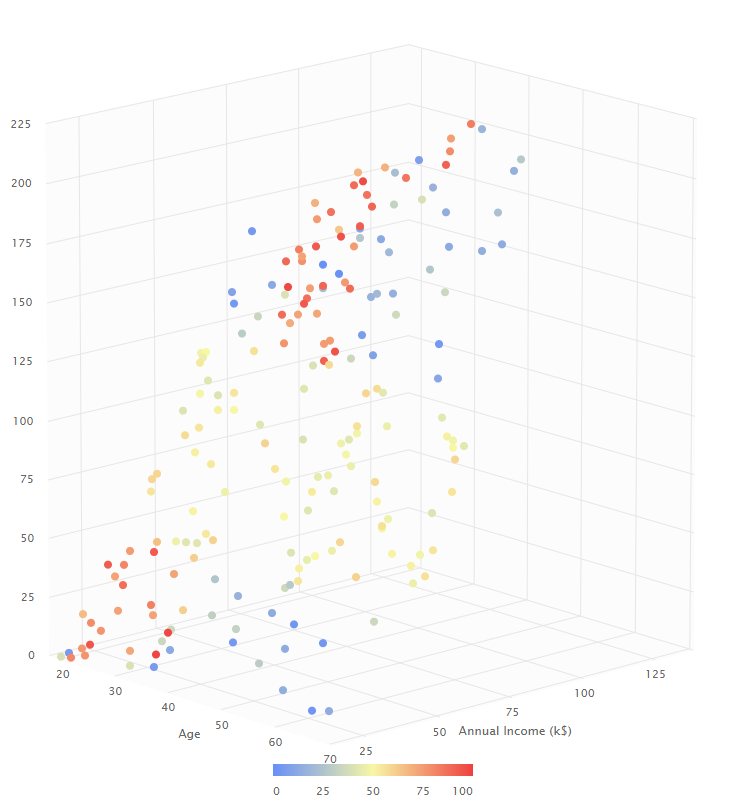
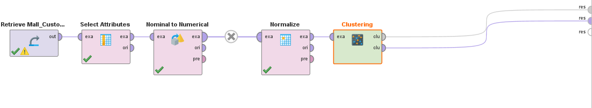
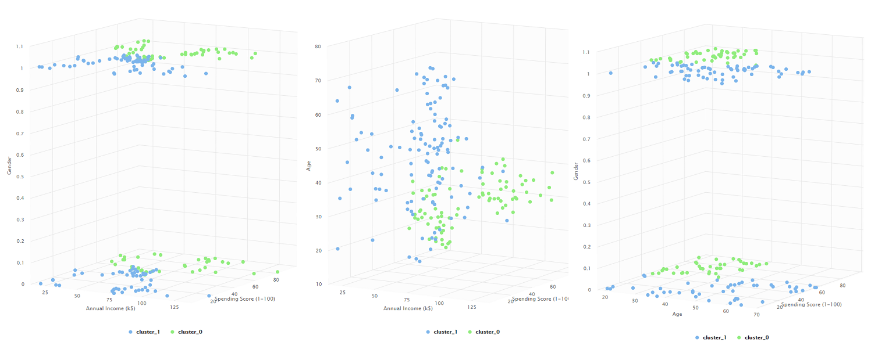
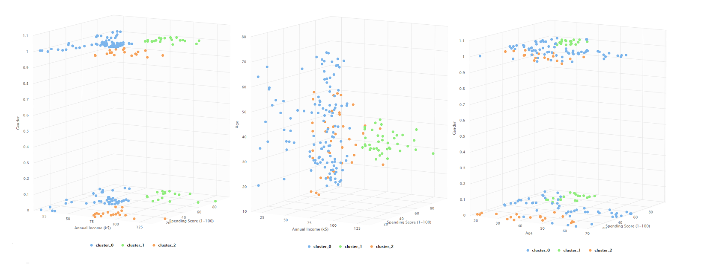
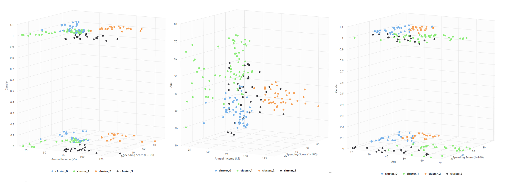
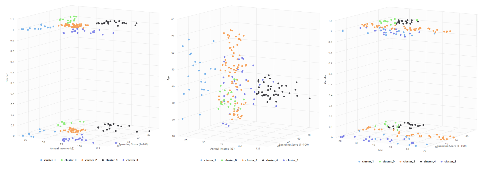
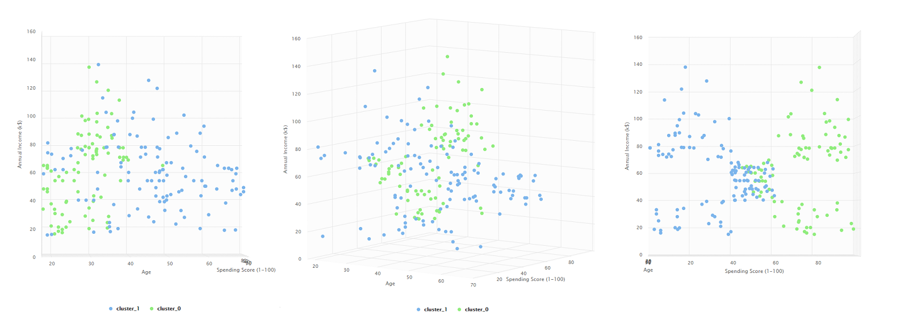
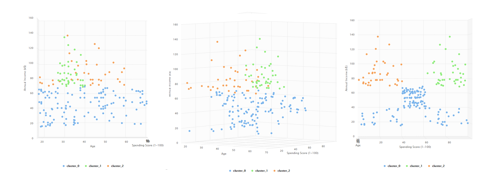
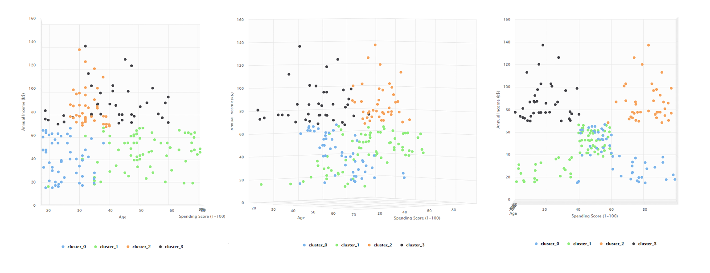
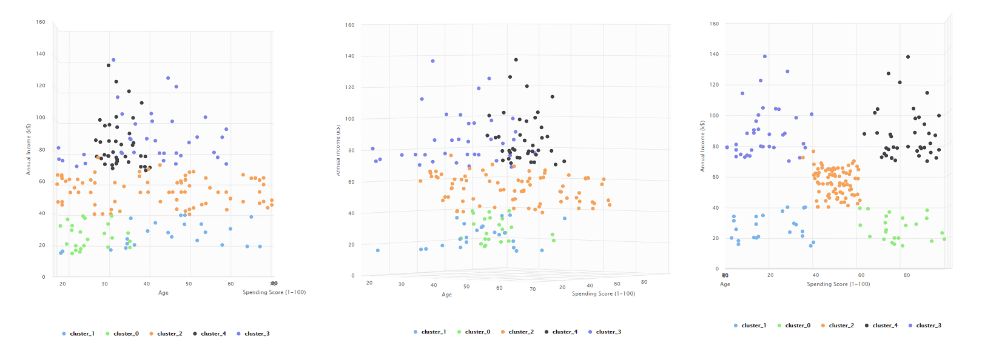

Clustering - Dataset Mall Customer Segmentation Data

En Machine Learning, existen dos tipos de aprendizaje, el supervisado y el no supervisado. En el caso de los últimos, esto ocurre cuando tenemos datos pero realmente no sabemos o directamente, no interpretamos una etiqueta para clasificarlos.
Al surgir esta necesidad de clasificar datos de los cuales a simple vista no vemos ninguna relación, surgen los algoritmos de Clustering, cuyo objetivo es básicamente crear agrupaciones o subconjuntos de un conjunto grande de datos de forma de dar y encontrar distinciones especiales que hacen ciertos datos distintos de otros en el mismo dataset. Los grupos mencionados, se les denominan clusters y estos encuentran la relación entre los datos de su subgrupo en base al algoritmo empleado para crearlo, entre los cuales hay:
-
Algoritmo de K-Means: Se establece el número de grupos que se desea a la salida del algoritmo y luego el algoritmo seleccionará lo que llama "centroides" que son puntos aleatorios en un principio que representan el centro del subgrupo a reconocer. Luego, se unen los puntos circundantes a los centroides dependiendo de que tan cerca estén de ellos (si un dato está mas cerca del centroide A que del centroide B entonces será parte del grupo A). Finalmente, el algoritmo realiza una iteración y actualiza el centroide de cada grupo dependiendo de la media aritmética de las posiciones de los datos que fueron metidos en ese grupo. Estas iteraciones se realizan un número parametrizado de veces hasta que se llega a los mejores centroides posibles y se divide toda la data.
-
Clustering jerárquico: Este algoritmo puede ser realizado de dos formas, comenzando de un grupo con todos los datos contenidos donde este se va diviendo en base a la similitud de los datos del conjunto o al revés, donde se comienza con un grupo por cada uno de los datos del conjunto y luego estos grupos se van uniendo en varias iteraciones hasta llegar a uno uno solo. Usualmente, se elige la forma aglomerativa (la segunda) ya que tiene un orden de tiempo de ejecución mucho más rápido que la otra (la otra sin embargo, es mejor para ciertos casos especiales). En ambas formas, lo que se termina creando es un dendograma que representa la evolución de los grupos en cada iteración. Estos grupos o jerarquías pueden ser visualizados en cualquier iteración dependiendo de la cantidad de clústeres que se desee. Por ejemplo, si queremos 3 clusteres, vamos a visualizar el dendograma hasta la iteración donde se hayan juntado los datos en los tres grupos (aunque el algoritmo siga hasta llegar a 1 ).
Dataset Mall Customer Data
Este tipo de datasets son un excelente caso de uso para el paradigma de clustering. En estos casos, un analista busca similitudes en grupos de gente basado en sus comportamientos. Analizando estos datos a mano se puede hacer inescalable o incluso imposible ver grupos de gente distinta, uno solo ve personas comprando, no ve que posiblemente esta gente pueda dividirse bajo ciertas motivaciones e idelogías que pueden permitir hacer crecer al negocio al reorganizar el modelo de venta para que se adecue mejor a estos patrones.
Este dataset es simple, contiene solo 5 columnas:
- CustomerID: Número único para identificar al cliente
- Gender: Género del cliente, femenino o masculino.
- Age: Edad del cliente
- Annual Income: Sueldo anual del cliente en miles de dólares.
- Spending Score: Un puntaje dado por el propio Shopping basado en el comportamiento y hábitos de compra de los clientes (Es decir, mejores puntajes para aquellos clientes frecuentes que gastan dinero la mayor cantidad posible de veces).
Analisis
Para la visualización y analisis de estos datos, utilizaremos la herramienta Rapidminer. Primero, cargamos el dataset a rapidminer. Observamos que es bastante limpio, no tiene datos faltantes y parece tener buenas distribuciones de los datos en sus columnas.
A continuación, vamos a visualizar los datos y vamos a graficar en un Scatter 3D Edad como X, Sueldos Anuales como Value y Puntaje de Gasto como Color.

A simple vista, podemos analizar que los compradores que más gastan se encuentran entre las personas de menor edad, entre las que tienen menos sueldo anual y las que tienen más sueldo anual. Este analisis no parece dar un patrón específico para reconocer a los grupos de compradores. Es por esto que añadiremos el bloque de K-means para crear clústeres. Haremos pruebas para clusteres con grupos de 2, 3, 4 y 5.
Previo a esto, debemos agregar un operador "Select Attributes" donde seleccionaremos todos los datos menos el de CustomerID ya que es completamente arbitrario y no aporta nada y además un operador de "Nominal to Numerical" para convertir el Gender en una clase numérica de 0 y 1 (usamos coding type unique integers y esto hará que Male sea un 0 y Female un 1).

Para cada uno de los k-means, realizaremos las siguientes gráficas (todas con cluster=color):
- X: Annual Income, Value: Spending Score, Y: Gender
- X: Annual Income, Value: Spending Score, Y: Age
- X: Age, Value: Spending Score, Y: Gender
K means con 2 clusteres

K means con 3 clusteres

K means con 4 clusteres

K means con 5 clusteres

Observaciones
Algo muy llamativo en todas las gráficas que incluyen el parámetro de
Gender es que tanto para Male como Female se forman clusteres muy
similares, independientemente de la cantidad elegida de clusteres,
indicando que el género no parece afectar a los patrones de compra de
las personas.
De este modo, deberíamos enfocar nuestro análisis a las donde Gender no
es considerado. A continuación, mostraremos la gráfica de Annual Income,
Spending Score y Age para cada cluster en distintos ángulos y
realizaremos un análisis de cada una.
2 clusteres

En estas agrupaciones, el algoritmo parece en primera instancia separar los datos por edades, donde hay un grupo de 40 años o menos y un grupo disperso que se concentra más en las edades de 40+. Sin embargo, una rotación muestra como en realidad separa a los compradores por su puntaje de gastos (entre 0 y 50 y de 50 a 100). Esto indica en primera instancia que 2 clusteres no son suficientes para este conjunto de datos ya que solo nos termina dando una distinción bastante lineal.
3 clusteres

Ahora con tres clases, parece haber una interpretación más clara que en la anterior. Distinguimos tres grupos:
- Compradores con altos ingresos, poco gasto en el centro comercial y edades variadas.
- Compradores con altos ingresos, altos gastos y edades menores a 40 años.
- Compradores con menor ingreso anual que la media, gastos dstribuidos entre poco y mucho y edades completamente variadas.
El último grupo identificado, indica que podríamos separar esta data en aún más grupos.
4 clusteres

El clustering en 4 grupos identifica el problema visto con 3 grupos, separa aquellos Compradores con ingresos debajo de la media en dos grupos, uno de edades menores a 40 pero altos gastos en el Shopping y uno de edades mayores a 40 pero con pocos gastos. Aún con estos grupos separados, vemos que en la tercera vista vemos un área donde hay personas que tienen tanto ingresos medios como gastos medios pero estan conformados por todas las edades. Este último podría ser distinguido como un nuevo grupo.
5 clusteres

En esta última agrupación finalmente vemos el problema identificado en la parte anterior. Terminamos identificando un quinto grupo de personas que tienen un salario promedio, tienen un gasto promedio y pueden tener cualquier edad.
Conclusiones
Al final, terminamos identificando 5 grupos importantes en nuestros datos:
- Compradores con altos ingresos, bajo gasto y edades variadas.
- Compradores con altos ingresos, altos gastos y edades menores a 40 años.
- Compradores con bajos ingresos, altos gastos y edades menores a 40 años.
- Compradores con bajos ingresos, bajos gastos y edades mayores a 40 años.
- Compradores con ingresos medios, gastos medios y edades variadas.
Con estos patrones, podríamos incluso tratar de darle alguna etiqueta a cada uno de los grupos de forma de identificarlos mejor. Por ejemplo, el tercer grupo, aparenta ser de jóvenes que a su corta edad, no ven todavía el valor en el dinero y realizan gastos con poca conciencia. Asimismo, el cuarto grupo es lo contrario, es el grupo de adultos que con bajos ingresos, decide hacer mejores inversiones que realizar gastos en un Shopping. El último grupo, representa a los compradores promedio, este grupo probablemente de agregar un cluster más, se separe en compradores promedio de menos de 40 y más de 40 años.
En si, esta data es bastante interesante para identificar grupos visualmente. Para ampliar las capacidades de la detección de grupos, lo ideal sería trabajar con una mayor cantidad de atributos, como por ejemplo, tipos de items más comprados, de forma de poder efectivamente crear planes para ver en que gasta su dinero la gente con las características antes mencionadas y hacer planes personalizados.